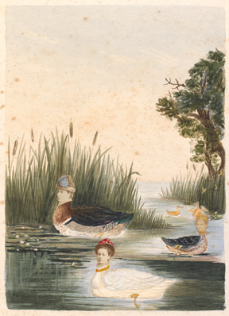

Sunday, July the 25th, 2010
back to: title, date or indexes
Kristan Tetens, at The Victorian Peeper, has a postage about an exhibition (in North America, alas) entitled Playing with Pictures: The Art of Victorian Photocollage. Splendid stuff, and I recommend you read, look, follow the links, and learn.

Kate Edith Gough, Untitled page from the Gough Album (1870s)